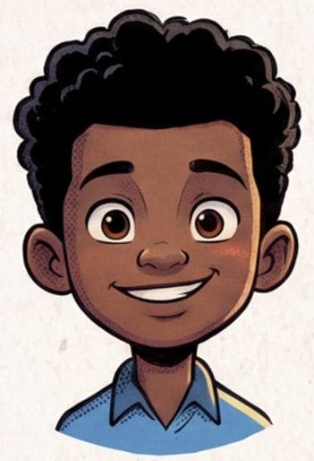
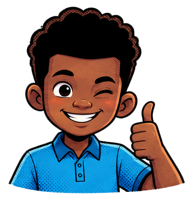
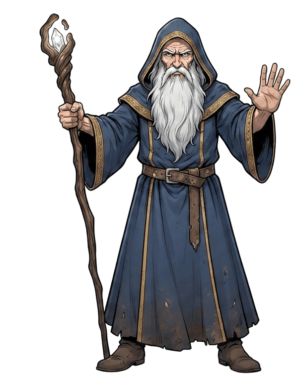

Help Chike reach the cabin! Glowing lanterns ask a question. Get it right for a shortcut.

You have completed this level in
Who will walk the forest? To switch later, tap your explorer's face on the level sign.
